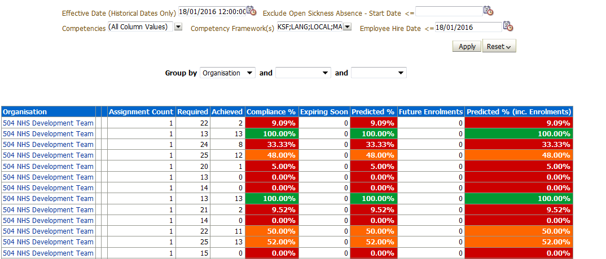

Compliance Trending Dashboard
Description
This dashboard is designed to provide users with intelligence around compliance levels within the organisation.
Allocation
This dashboard is available to the following URPs:
XXX Administrator Self Service (Payroll Approvals Not Required)
XXX Administrator Self Service (Payroll Approvals Required)
XXX Career Management
XXX BI Administration
XXX HR Administration
XXX HR Administration (With RA)
XXX HR Management
XXX Learning Administration
XXX Manager Self Service (Payroll Approvals Not Required)
XXX Manager Self Service (Payroll Approvals Required)
XXX Supervisor Self Service
XXX Supervisor Self Service (Limited Access)
Organisation Compliance Tab
Description
This tab is designed to show the competency compliance levels of staff grouped by organisation, specific organisation level (1-13), staff group, pay grade or supervisor up to three times. It provides users with a count and predicted % based on competencies that are due to expire within a user defined period and a count of future enrolments and predicted % based on competencies that are due to expire within a user defined period including future enrolments.
Prompts are provided to enable users to select specific competencies or competency frameworks. When selecting a competency or framework, the analysis is updated to restrict to the assignments in the organisation that require the selections. Users have the option to exclude Open Ended Sickness Absence (Long Term) based on the Absence Start Date.
For example, if 5 people are in an organisation, three of them are in a position that requires a Fire Safety competency, and the other two are in a separate position that does not, if the analysis was updated to restrict to the fire safety competency, the assignment count would show ‘3’ as only 3 assignments in that organisation require the selected competency.
Prompts
Organisation
Job Role
Competency Framework
Competency
Effective Date
Employee Hire Date
Effective Date (Historical Dates Only)
Exclude Open Sickness Absence – Start Date <=

By default the tab displays information by the organisation the employee is in, however this can be changed to group by a specific level if required.
Compliance Timeline Tab
Description
The analysis returns a graph view which provides the number of employees due to expire in each month, grouped by competency (a different coloured line is provided for each competency selected). By default the analysis will not return any results as it requires the user to select competencies using the prompt. Beneath the graph view, a detail view is provided which lists employees and their relevant competencies and the start / end dates of each. The detail view is linked to the chart view – when the user clicks a point on the graph, the detail view will update to show details for the selected competency and month. The analysis includes an option to filter for 'Only required' or 'All competencies', depending on reporting needs.
Prompts
* Competencies
* Days to Look Ahead (default: 365)
Limit results to Required Competencies Only (default: No)
Data Items
| Assignment Number | |
|---|---|
| Employee Name | |
| Organisation | |
| Competence Name | |
| Month | |
| Date From | |
| Date To | |
| Count of Assignments |
Example Screenshot

Compliance History Tab
Description
This analysis returns a summary view of competency requirements, competencies achieved and compliance percentage over a user defined period of time. Users are able to select a range of competency frameworks and competencies as required. Competency Requirements can be turned on or off depending on user requirements.
Data Items
| Title | Description |
|---|---|
| Competency Name | |
| Org Level 1-13 | |
| Organisation | |
| Staff Group | |
| Job Role | |
| Date | MM-YYYY |
| Requirements | Count of Competencies Requirements |
| Achieved | Count of Competencies Achieved |
| Percentage Achieved | Count of Competencies Achieved / Count of Competencies Requirements * 100 |
View Selector
Graph (default)
Pivot Table
Table
Prompts
Competency Framework(s)
Competency
Date Between
Based on Competency Requirements (Default: Yes)
Example Screenshot